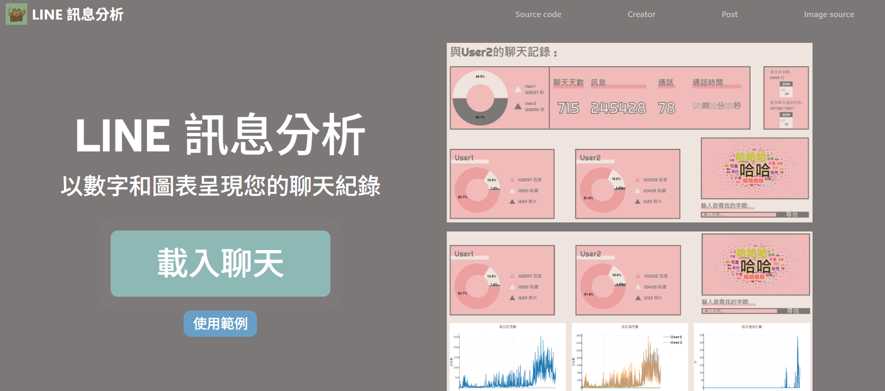
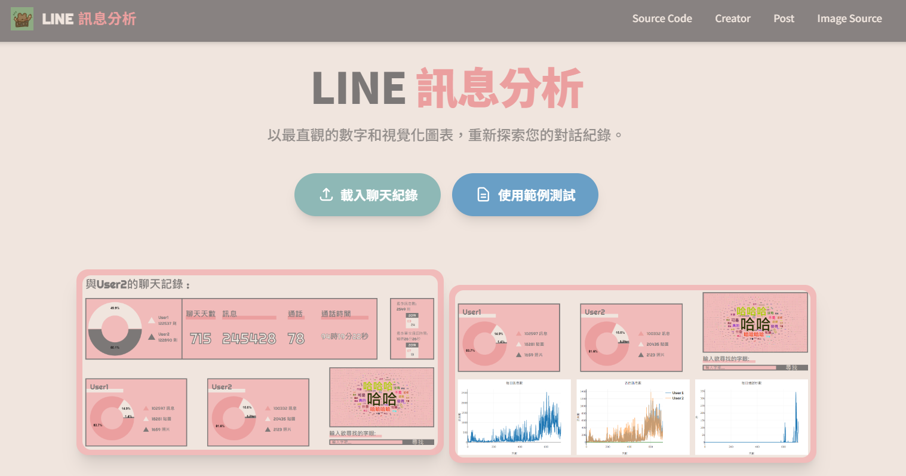
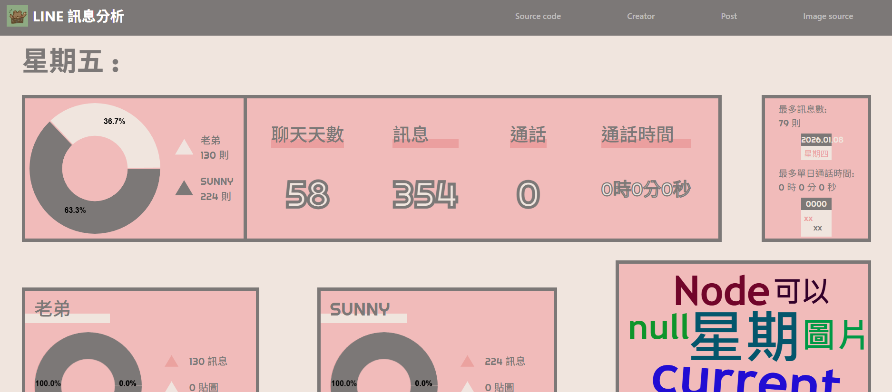
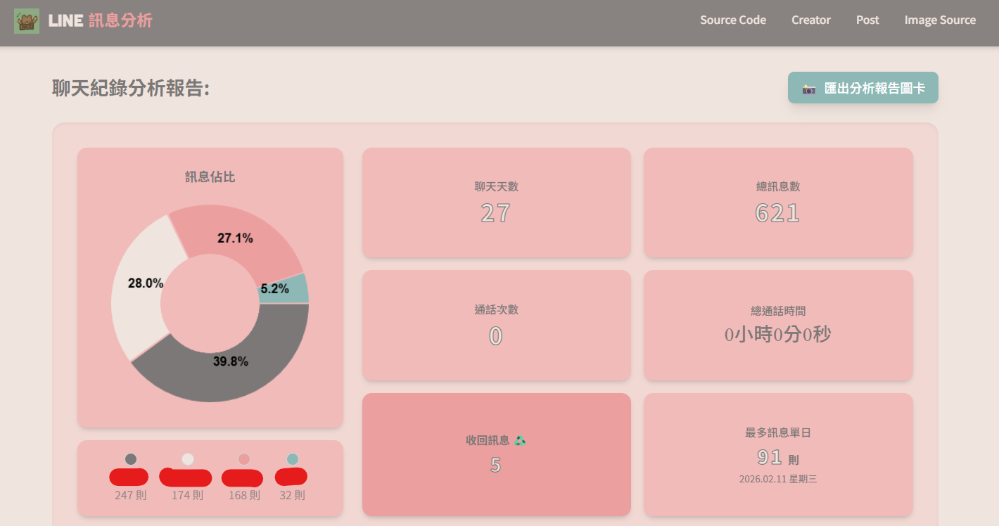

「從『寫死的 2 人限制』到『動態無限人數』，從『雜亂的程式碼』到『現代化架構』——這是一場與 AI 協作的開發冒險。」
這是一個關於開源貢獻、技術重構，以及與 AI 助手並肩作戰的故事。
原本的 line-message-analyzer 是一個很實用的工具，能將 LINE 聊天記錄視覺化為統計圖表。但隨著時間推移，一些問題逐漸浮現：只能分析兩個人、手機版容易跑版、程式碼難以維護⋯⋯於是我花了兩天時間，進行了一次徹底的重構與升級。這篇文章將記錄這次改版的核心差異、技術亮點，以及未來持續演進的藍圖。
# 改版前 vs 改版後：視覺與排版
以前：依賴 Bootstrap，各個區塊的排版較為生硬，在不同螢幕尺寸下容易跑版，視覺層級較為平面。
現在：全面導入 Tailwind CSS，引入「毛玻璃特效」導覽列、圓角卡片、柔和陰影，並採用 Flexbox 響應式網格。不論是用電腦大螢幕還是手機觀看，介面都俐落且充滿現代感。


# 核心功能：突破 2 人限制 🚀
這是本次重構最重要的技術突破！
以前：HTML 與 JS 邏輯全部「寫死」給 2 個人（例如 memberCanvas1 和 memberCanvas2）。如果上傳 3 人以上的群組對話，系統只會畫出前兩個人的圓餅圖，後面的資料完全無法顯示。
現在：底層邏輯全面重寫為 N-Member 動態生成！系統會自動抓出對話紀錄中出現過的「所有」成員，自動為每個人建立專屬的統計卡片與比例圓餅圖，流暢地呈現在畫面上。


# 現在可以分析多少人？答案是：無限！
理論上沒有上限！現在的系統已經完全沒有人數的硬性限制：
-
資料解析層
只要文字檔裡出現不同的名字，
analyze.js就會自動為該名字建立獨立的統計陣列（統計文字、貼圖、照片數量）。 - 視覺排版層 我們為成員卡片設計了 flex-wrap 彈性換行網格系統。電腦版固定佔 1/3 寬、平板佔 1/2 寬、手機全寬。
實際案例：3 人家庭群組會呈現 3 張成員卡片自動換行；10 人公司群組會依序由左排到右，整齊排列不破圖。無論是閨蜜小圈圈還是千人社團，分析器都能完全吃下來，並漂亮地畫出專屬分析圖卡！🎨
# 程式碼品質與技術亮點
以前的 HTML 檔案裡塞滿用不到的 CSS class，全域變數雜亂無章。現在不僅清除了冗餘程式碼，更建立起現代化架構：
狀態集中管理 (AppState)
const AppState = {
chatname: "",
members: [],
memberStats: {},
totalMessages: 0,
unsent: 0
};動態生成前端架構
sortedKeys.forEach((member, i) => {
let canvasId = `member_${i}`;
generateDonut(canvasId,
[mTxt, st.stickers, st.photos],
['#EB9F9F', '#F0E5DE', '#7C7877']
);
});- 資料精確修復： 解決收回訊息的邏輯漏洞、X軸日期顯示錯誤，並支援純數字通話紀錄。
- 效能優化： 移除不必要的 jQuery 依賴，提升渲染效能；圓餅圖與文字雲能根據容器動態計算尺寸。
- 獨立測試環境： 導入
debug.js，在修改前端前可一秒驗證 Node.js 層的解析結果。
# 與 AI 協作的開發心得
這兩天的開發過程，讓我深刻體會到與 AI Agent 協作的兩面刃：
極速 prototyping（迅速生成骨架程式碼）、重構助手（協助清理冗餘程式碼）、自動撰寫文件註解。
會自作聰明亂加沒要求的功能（如照片折線圖）、面對複雜邏輯容易出錯，將控制權全數讓渡會導致災難性破壞。
1. 先規劃再下指令，不要讓 AI 自由發揮。
2. 一次只改一個功能，並透過 debug.js 逐步驗證。
3. 每次修改前必須 commit 建立回溯點。
# 🔮 未來展望：還有很多值得再做
「一個好的專案，永遠有下一版。」
這次改版解決了幾個歷史遺留問題，但這只是開始。如果未來有機會，還有很多方向值得探索：
Issue #2：使用者名稱包含空格
- 問題：當使用者名稱包含空格（如 "Tony Chou"），解析器會錯誤地將名稱拆開。
- 目前解決：改用 Tab 作為主要分隔符，並強化 fallback 機制。
- 未來可優化：支援更多特殊字元（如底線、點號），並加入名稱自動校正功能。
Issue #4：英文時間格式（AM/PM）
- 問題：英文格式的「7:18 AM」會導致解析錯誤。
- 目前解決：加入對 AM/PM 的支援，並強化時間正則表達式。
- 未來可優化：支援更多語系（日文、韓文），自動偵測檔案語系，動態切換解析規則。
🚀 其他潛在功能
# 💡 結語與開放邀請
這次改版不僅讓 line-message-analyzer 煥然一新，也讓我深刻體會到開源貢獻的意義。從 2 人限制到無限人數，從雜亂程式碼到乾淨架構，每一步都是成長。如果你對這些功能有興趣，或是想一起參與開發，非常歡迎：
- Fork 專案：歡迎來到 我的 GitHub Repo 逛逛。
- 提交 PR：任何 bug 修復或功能增強都無比歡迎。
- 開 Issue：有任何想法或問題，都可以直接發起討論。
也特別感謝原作者開發了這麼棒的專案。開源的精神就是一起讓工具變得更好。期待未來的某一天，這個專案能成長得更加強大，也期待在 GitHub 上與你相遇！